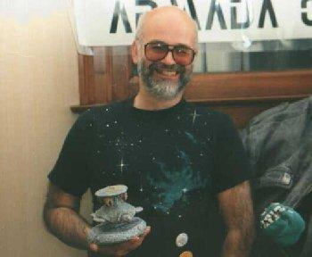
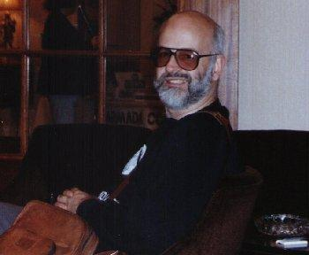

Gone but not Forgotten - Sir Terry Pratchett
ArmadaCon III
Getting Terry Pratchett was quite a coup back in 1991.
He was already a renown author of the Discworld books and was in demand by just about everyone!
Terry was a fun guest; besides going into the chaos of writing the Discworld books, he also gave a hand selling things in the Charity Auction.
Terry took Death's arm and walked into the Black Desert in March 2015.
|  |  |
|
|
|
|